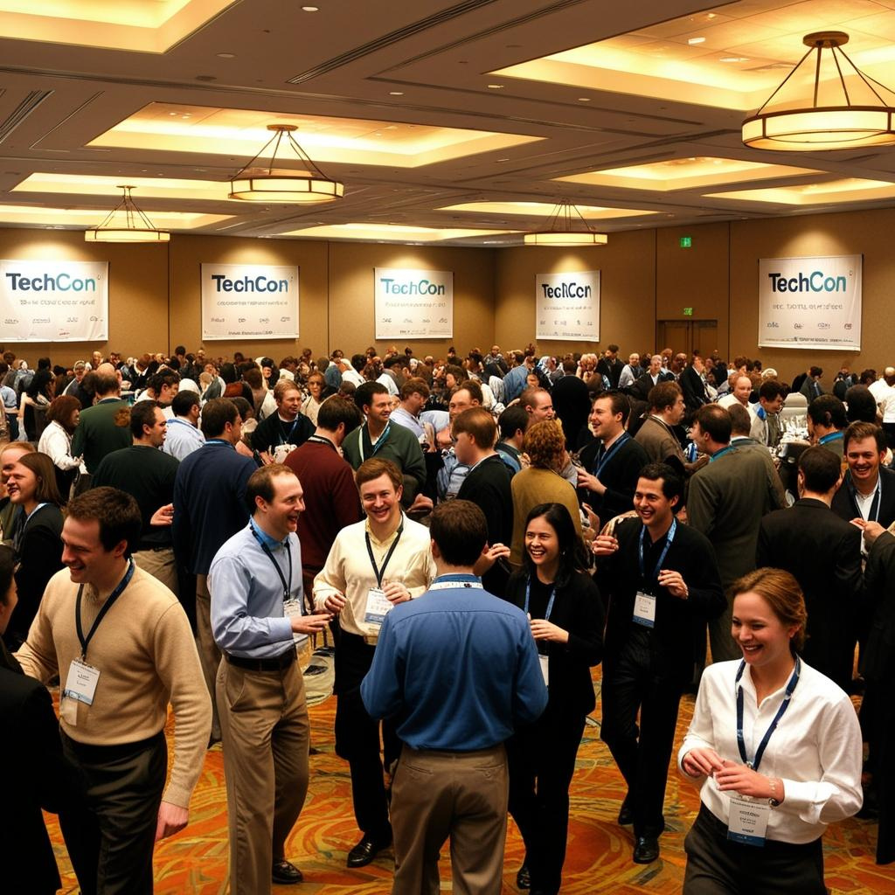
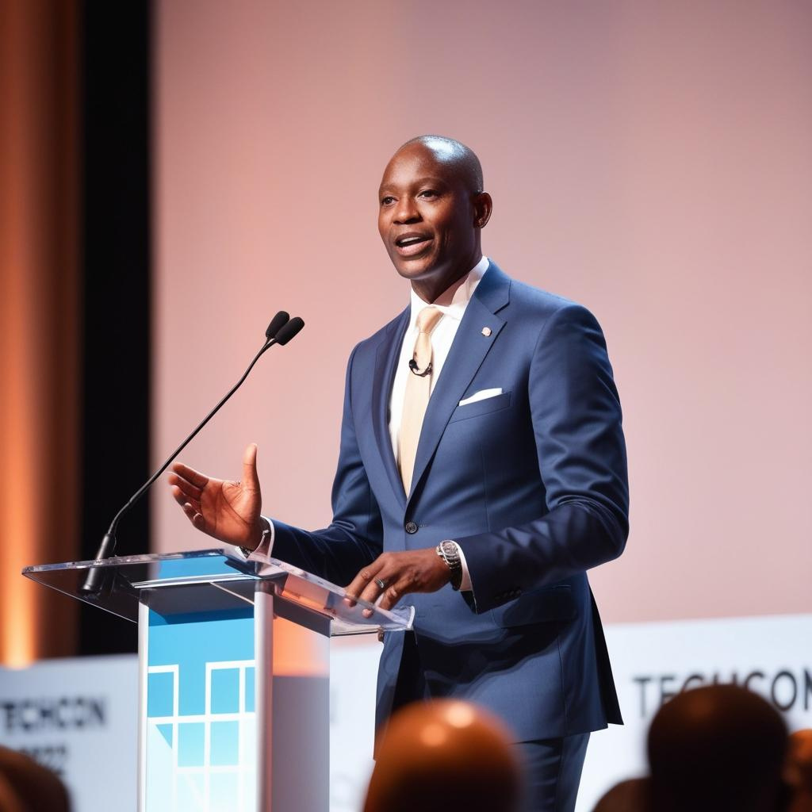

History of TechCon
TechCon began in 2010 as a small gathering of tech enthusiasts in Silicon Valley. Over the years, it has grown into a global platform for innovation, hosting thousands of attendees from startups to tech giants. Key milestones include the launch of our AI-focused track in 2015 and the virtual conference in 2020.

Mission
TechCon 2024 aims to inspire innovation, foster collaboration, and showcase cutting-edge technologies. We are committed to creating an inclusive environment where diverse voices drive the future of tech.

Past Speakers

Bheki Khumalo
CEO of InnovateAI, Bheki Khumalo at TechCon 2022 about the future of generative AI. Her work has revolutionized natural language processing.
John Smith
CTO of CyberSecure, John shared insights on cybersecurity trends at TechCon 2021, focusing on quantum-resistant encryption.
Grace Hopper
Known for her contributions to programming languages, Grace inspired young developers with her talk on the importance of clean, maintainable code at TechCon 2023..